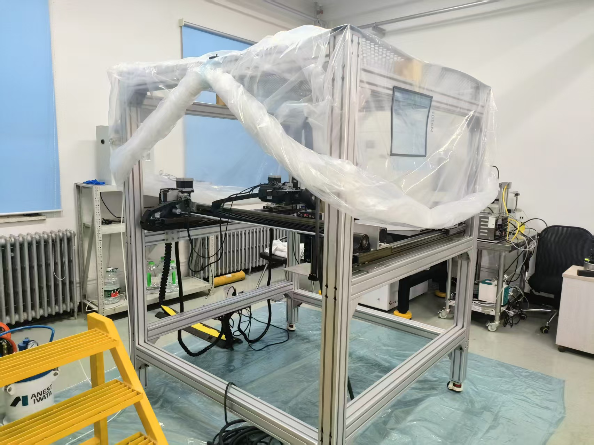
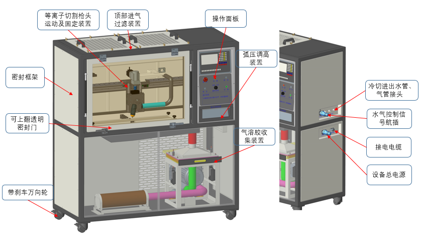
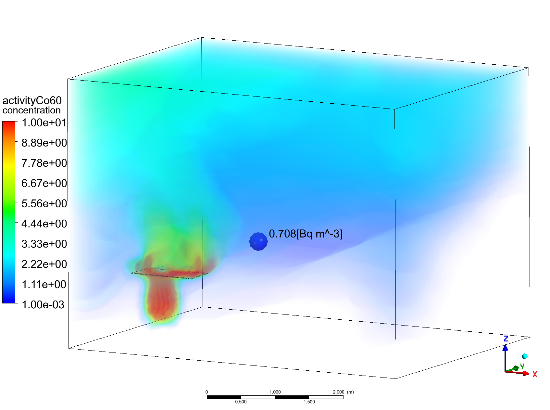
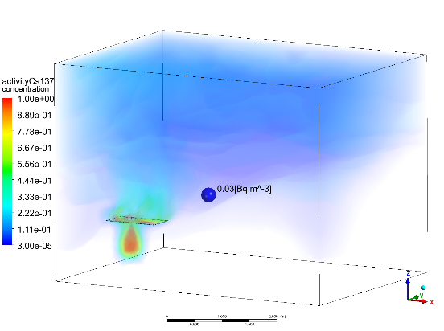

退役切割气溶胶释放行为与内照射剂量预评估
硕士课题 · 院长基金相关研究
围绕“101堆”一回路管道退役切割，研究工艺参数如何影响放射性气溶胶的释放、粒径分布与空间输运，为源项分析和作业人员内照射剂量预评估提供依据。
- 研究内容
- 测量切割过程中的气溶胶释放率与核素粒径分布，分析 ⁶⁰Co、¹³⁷Cs、⁹⁰Sr 的释放差异；结合厂房结构、通风与人员位置，研究气溶胶扩散和吸入照射。
- 技术方法
- 采用等离子切割台架、ELPI 分级采样与核素活度分析获取源项数据；结合 CFD 气溶胶输运模拟及 ICRP 呼吸道模型、剂量系数，开展“源项测量—空间扩散—人员剂量”评估。
- 我的工作
- 设计并完成切割预试验，形成被课题组采纳的正式试验体系，在样品不可再生的条件下完成数据获取；独立处理数据、绘制图表、建立数学模型，并用 Python 编写预测程序，用于不同电流条件下的气溶胶特征预测和源项分析。
- 项目成果
- 团队形成气溶胶行为模拟与剂量预评估软件、研究报告和工艺特性分析报告；报告中的三种核素浓度模拟值与实测值的相对偏差均在 50% 以内。个人以第一作者发表相关 EI 收录论文，并形成试验方法、分析图表和 Python 预测程序。
预试验设计ELPI 分级采样核素分析Python 建模剂量预评估




查看学位课题与相关成果
学位课题聚焦“101堆”退役切割释放气溶胶中 ⁶⁰Co、¹³⁷Cs 的分布规律，结合成核理论、在线监测与分级采样结果开展数学建模。相关论文为《等离子切割101堆一回路管道放射性气溶胶的粒径分布与核素释放特性》。
院长基金相关工作覆盖源项测量、气溶胶行为模拟与人员剂量预评估。报告中的模拟与实测对比基于特定材料、切割工艺及采样位置，用于检验相应场景下的方法表现。